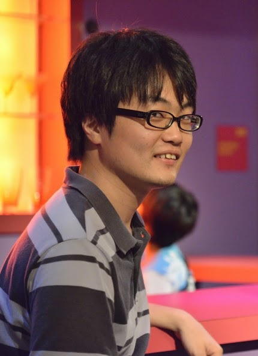
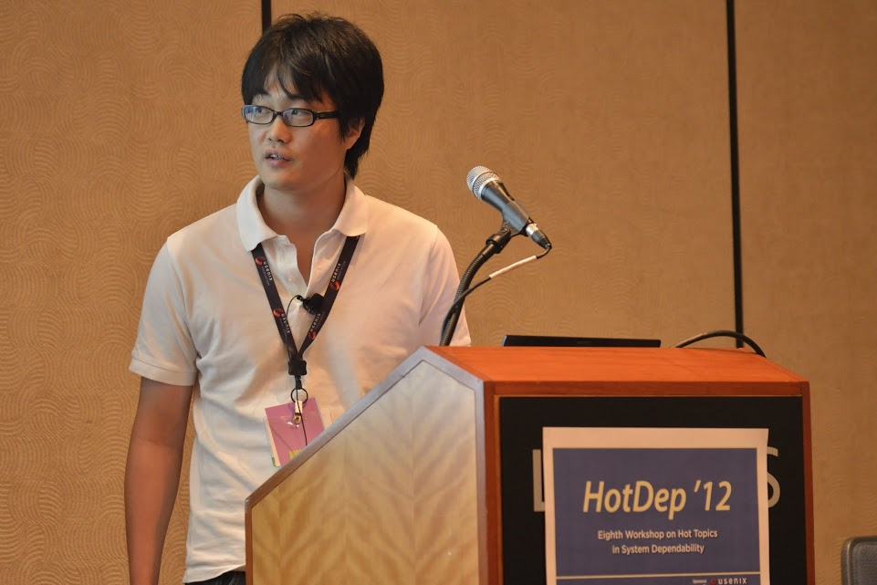

Takeshi Yoshimura
 
Ph.D. student working with Prof. Kono at Keio University
email: yos at sslab dot ics dot keio dot ac dot jp
research interests: operating systems, device drivers, software bug, software analysis, software testing, model checking, fault injection, machine learning for systems software
target software: Linux kernel, Hadoop MapReduce, Apache Mahout, Clang static analyzer
Biography
Takeshi Yoshimura is a Ph.D. student at Keio University and a member of sslab. He received his M.E. and B.E.
degree from the Department of Information and Computer Science at Keio University. His research interests
include dependable systems, operating systems. His current research topic is to develop
a new mechanism to improve reilability of operating system kernels.
Publications
Journal
-
Using Fault Injection to Analyze the Scope of Error Propagation in Linux.
Takeshi Yoshimura, Hiroshi Yamada, Kenji Kono,
IPSJ Transactions on Advanced Computing Systems (ACS42), Vol. 6 No.2 pp.1-10, Apr 2013.
International conference
-
Do Injected Faults Cause Real Failures? ― A Case Study of Linux ―
Nobuo Kikuchi, Takeshi Yoshimura, Ryo Sakuma, Kenji Kono
The 25th IEEE International Symposium on Software Reliability Engineering (ISSRE '14), Student Paper, Nov. 2014.
-
Who writes what checkers? --- Learning from bug repositories
Takeshi Yoshimura, Kenji Kono,
The 10th Workshop on Hot Topics in System Dependability (HotDep '14), Oct 2014.
-
FoxyFeed: Forging Device-level Asynchronous Events for Kernel Development
Kenji Kono, Shunsuke Miyahara, Hiroshi Yamada, Takeshi Yoshimura
The 20th IEEE Pacific Rim International Symposium on Dependable Computing (PRDC '14), Nov 2014.
-
Is Linux Kernel Oops Useful or Not?
Takeshi Yoshimura, Hiroshi Yamada, Kenji Kono,
The 8th Workshop on Hot Topics in System Dependability (HotDep '12), Oct 2012.
-
A Study on the Scope of Error Propagation in Linux.
Takeshi Yoshimura, Hiroshi Yamada, Kenji Kono,
The 42nd Annual IEEE/IFIP International Conference on Dependable Systems and Networks (DSN '12), Poster & Fast Abstract, Jun 2012.
-
Linux can be fault-tolerant: Analysis on the Scope of Error Propagation.
Takeshi Yoshimura, Hiroshi Yamada, Kenji Kono,
The 3rd Annual LinuxCon Japan, Student Presentation Session, Jun 2012.
-
Can Linux be Rejuvenated without Reboots?
Takeshi Yoshimura, Hiroshi Yamada, Kenji Kono,
The 3rd International Workshop on Software Aging and Rejuvenation (WoSAR '11), pp.50-55, Nov 2011.
Japanese domestic conference/ technical report
-
Linux へのソフトウェアフォールトインジェクションの有用性の調査
菊池 伸郎，吉村 剛，佐久間 亮，河野 健二
システムソフトウェアとオペレーティング・システム研究会, 2014 年 8 月．
-
Linuxにおける障害異常検知への管理図の適用
深井 賢，中村 啓太郎，吉村 剛，河野 健二
システムソフトウェアとオペレーティング・システム研究会, 2014 年 8 月．
-
ReBucket を用いた Linux カーネルバグの分類
佐久間 亮，菊池 伸郎，吉村 剛，河野 健二
システムソフトウェアとオペレーティング・システム研究会, 2014 年 8 月．
-
Linux カーネルにおけるバグの実態調査
吉村剛，河野健二
システムソフトウェアとオペレーティング・システム研究会, 2014 年 8 月．
-
Linux カーネルのパッチ分析
吉村剛，河野健二
ディペンダブルシステムワークショップ (DSW2013)，2013 年 12 月.
-
Linux におけるフォールトインジェクションによる障害と実際の障害事例の比較
菊池伸郎，吉村剛，河野健二
ディペンダブルシステムワークショップ (DSW2013)，2013 年 12 月.
-
仮想マシンモニタを用いた割込み処理のデバッグ支援手法
宮原俊介，吉村剛，山田浩史，河野健二
システムソフトウェアとオペレーティング・システム研究会, 2013 年 2 月.
-
Using Fault Injection to Analyze the Scope of Error Propagation in Linux.
Takeshi Yoshimura, Hiroshi Yamada, Kenji Kono,
コンピュータシステム・シンポジウム (ComSys '12), pp 13-24, 2012 年 11 月.
-
Linux カーネルにおけるエラー伝播の調査
吉村剛，山田浩史，河野健二
システムソフトウェアとオペレーティング・システム研究会, 2012 年 5 月.
-
オペレーティングシステムカーネルにおけるエラー伝播の調査
吉村剛，山田浩史，河野健二
システムソフトウェアとオペレーティング・システム研究会, 2011 年 4 月.
Software
- Binary-level software fault injector for x86 Linux
- Linux patch clustering
- Bug checkers specific to Linux device drivers
Awards
-
コンピュータサイエンス領域奨励賞，2013 年
情報処理学会
-
最優秀学生発表賞, 2012 年 5 月
情報処理学会 システムソフトウェアとオペレーティング・システム研究会
Degree
- March 2013, Master of Engineering, Keio University
- March 2011, Bachelor of Engineering, Keio University
Work experience
- 2014 年 4 月 - 現在，日本学術振興会 特別研究員（DC2）
- 2014 年 8 月 - 10 月，NEC グリーンプラットフォーム研究所インターンシップ
last updated: September 15 2014